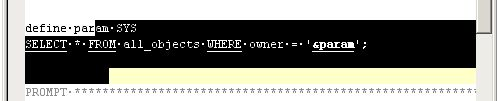

Text -> Stream Selection
Top
Next
Use Stream Selection instead of Column Selection. Stream selection is selection mode which select whole lines as you go down:

See
Text Menu
,
Text -> Column Selection
,
Text -> Toggle Selection Mode
.